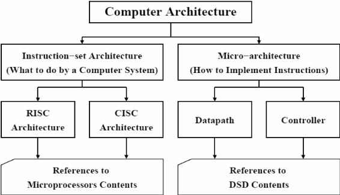

Computer Architecture
Links:
About Computer Architecture
Computer architecture is a specification detailing how a set of software and hardware technology standards interact to form a computer system or platform. In short, computer architecture refers to how a computer system is designed and what technologies it is compatible with.
As with other contexts and meanings of the word architecture, computer architecture is likened to the art of determining the needs of the user/system/technology, and creating a logical design and standards based on those requirements.
